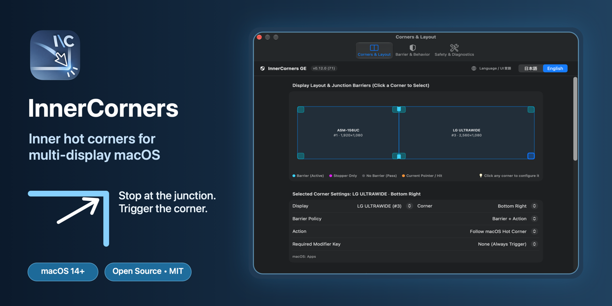
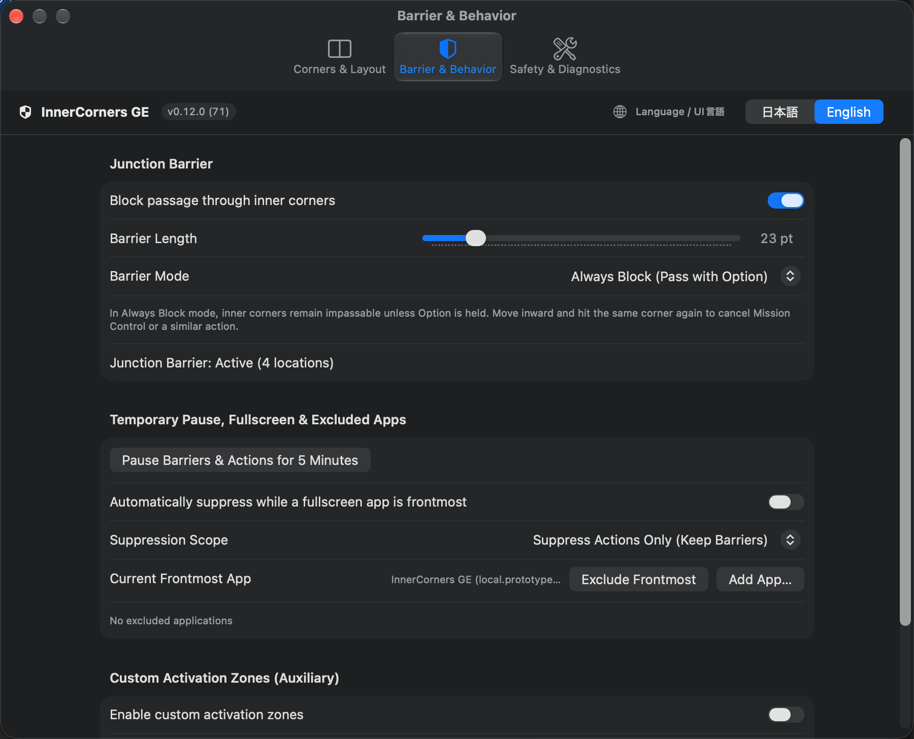

Stop at the junction
A configurable 10–100 pt soft barrier catches the pointer at an inner display corner.
Open-source macOS utility
Stop at the junction. Trigger the corner. InnerCorners adds short, directional cursor barriers where adjacent displays meet, then lets each display corner run its own action.
Experimental beta · Apple Silicon · macOS 14+ · Accessibility permission required · Ad-hoc signed and not notarized

The problem
At the junction between two Mac displays, the pointer can continue onto the next screen. That junction does not provide the hard outer edge that makes a native Hot Corner easy to hit. InnerCorners creates a small directional barrier at the junction so the inner corner becomes a reliable target.
How it works
A configurable 10–100 pt soft barrier catches the pointer at an inner display corner.
Assign a separate action and dwell time to each display corner, including overlapping junctions.
Hold Option to bypass barriers temporarily. An independent emergency shortcut disables barriers and quits.
Per-display control
Choose a display and corner, then set its barrier policy, action, modifier requirement, and dwell time.

Actions
Safety first
InnerCorners reserves Option as a temporary bypass. Control–Option–Command–Q independently disables barriers, saves that state, and quits. Barriers also wait before returning after sleep or a real display change.
Current limitations: the beta is ad-hoc signed and not notarized. It has not been validated on another Mac, Sidecar, or sustained 1000 Hz-class pointer input. Long-duration CPU and memory behavior has not been measured.
FAQ
No. An outer corner can be left to macOS. At an inner corner, InnerCorners can follow the corresponding macOS Hot Corners setting or run another supported action.
Beta 1 has been tested with two- and three-display layouts, including L-shaped and mirrored arrangements. That testing does not establish compatibility with every display, pointing device, or layout.
The permission is required because the app monitors and constrains pointer movement and uses synthetic input paths for some actions.
The current downloadable build is for Apple Silicon (arm64). An Intel build has not been provided or verified.
It is ad-hoc signed and not notarized. Review the release notes and keep both emergency exit paths available while testing.
日本語
InnerCornersは、macOSの隣接ディスプレイ接合部に短い方向別カーソル壁を設け、画面ごとの内側コーナーからアクションを実行できるようにする実験的なメニューバーアプリです。Optionキーを押している間は壁を一時通過できます。
現在のBeta 1はApple Silicon・macOS 14以降向けです。アクセシビリティ権限が必要で、アドホック署名・未公証です。試用前に日本語READMEの安全設計と既知の制限を確認してください。
Experimental beta